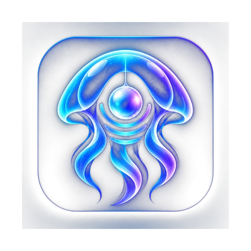
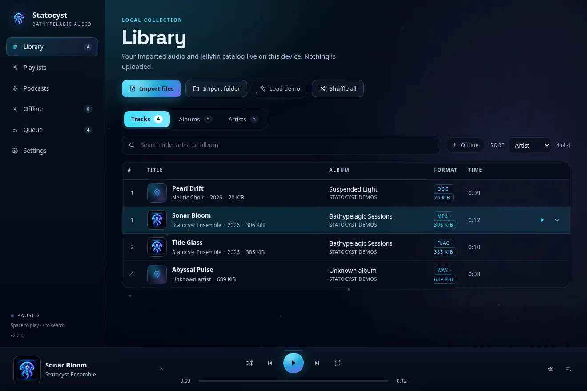
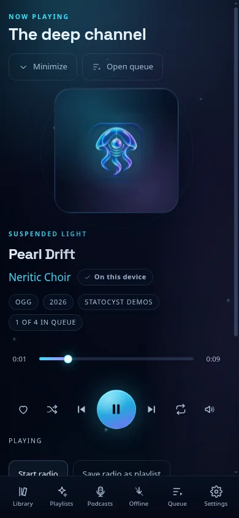
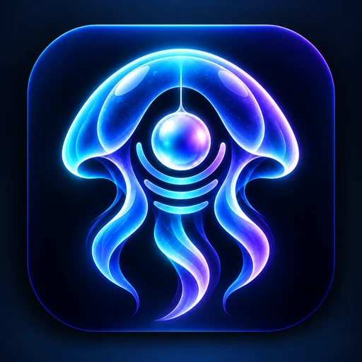
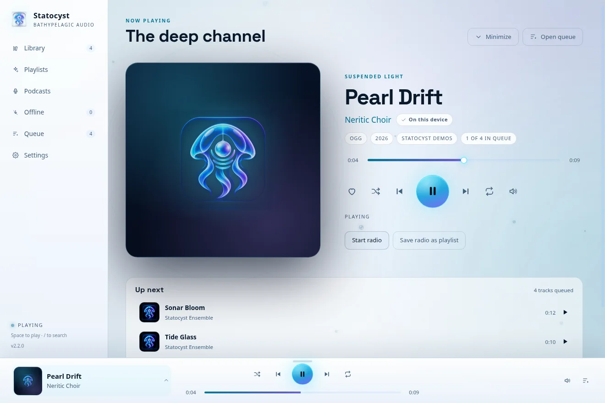
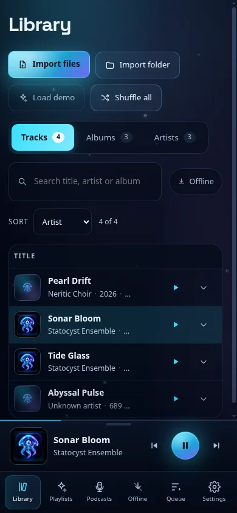
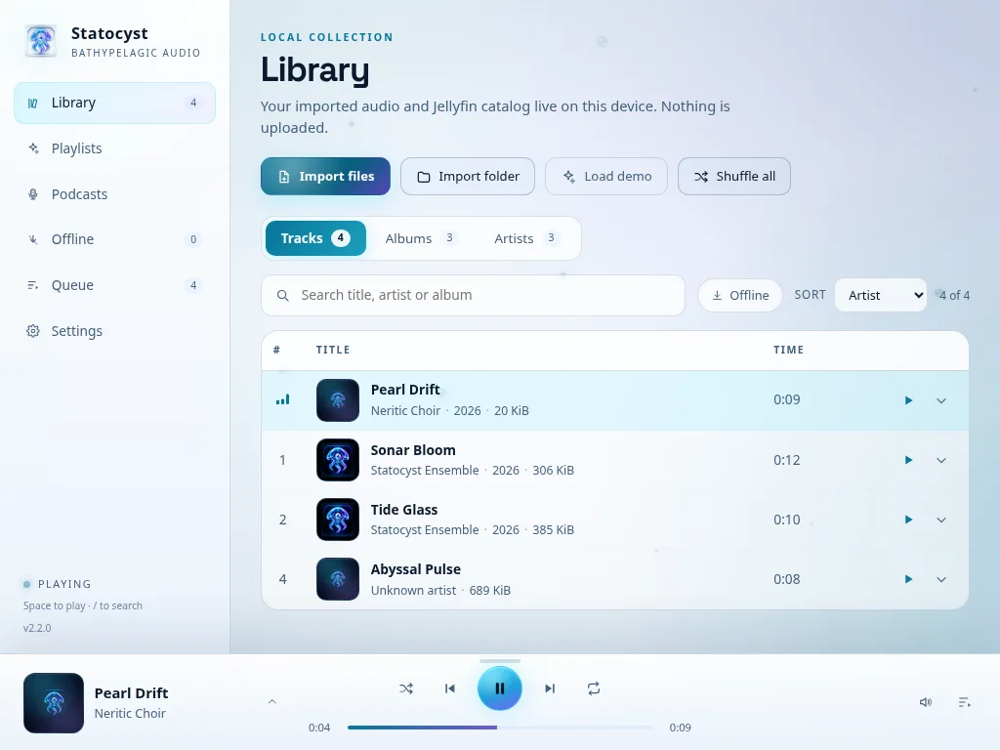
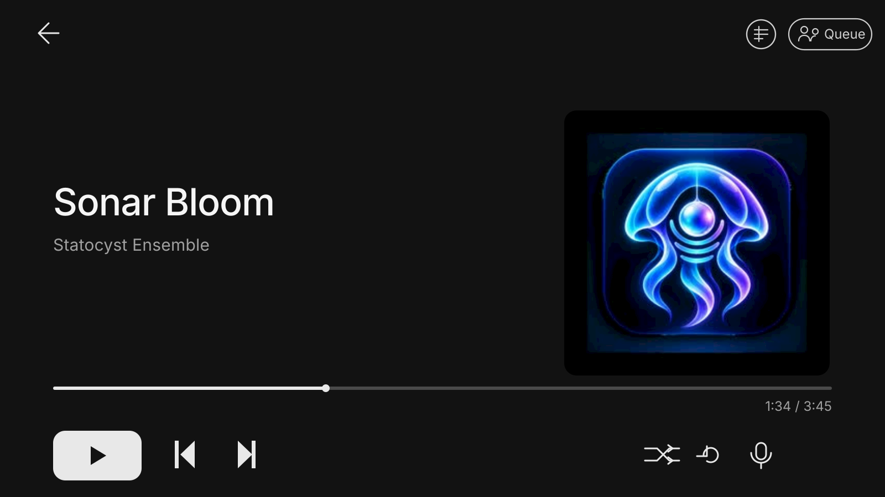

Statocyst Landing pageStatocyst plays the library you already own — files on your device, or a Jellyfin server you run yourself — on desktop, phone, tablet, and in the car. One active queue, saved through restarts. No account with us, no ads, no tracking.


Abyss navy carries the page. Sonar cyan marks what is live. Violet is the deep bloom behind artwork. Wet sand appears only at the shore: the hero horizon and the release shelf.
Space Grotesk gives the product a scientific-instrument edge without looking like a startup template. Inter carries long copy. Mono is reserved for versions, checksums, file names, and depth markers.
“Every depth” means every screen and every source you own — not audio fidelity. Body copy stays quiet and legible: 16 px, 1.65 line height, cool pearl on abyss. The page should feel like reading a well-built instrument, not a campaign.
Devices are framed like glass fishing floats: thick rims, a single top highlight, deep shadow. Buttons are foam. The release section is the only dry land on the page, and it uses ink on sand for maximum contrast.

The same screenshots that prove the app works, framed as objects. Desktop is the hero; tablet and phone are the everyday surface; the car card is the constructed preview; a head-unit capture is still pending.




The real Android clips cover Library into Playlists, Queue and Now playing. They are re-encoded muted at 390 × 808 with poster frames; autoplay only in view, pause offscreen.
Current release: v2.2.0. Unsigned desktop builds, manual Android and iOS installs, checksums attached. Pick your platform — the shelf stays warm.
“Not a subscription. Not a cloud. A player that treats your library like it is yours — and then keeps playing when the network drops, the app restarts, or you get in the car.”
This is a design-direction preview, not the final landing page. Screens are real captures from the repo except the car card, which is a labelled constructed preview until a DHU run is recorded.